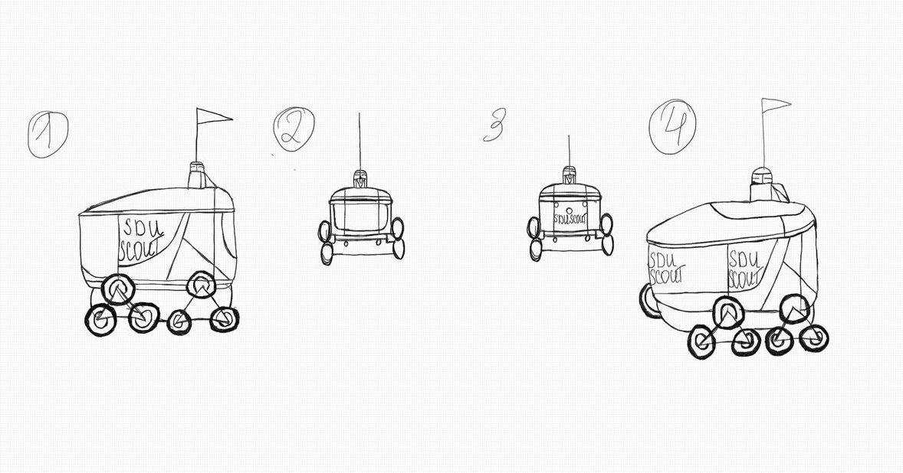
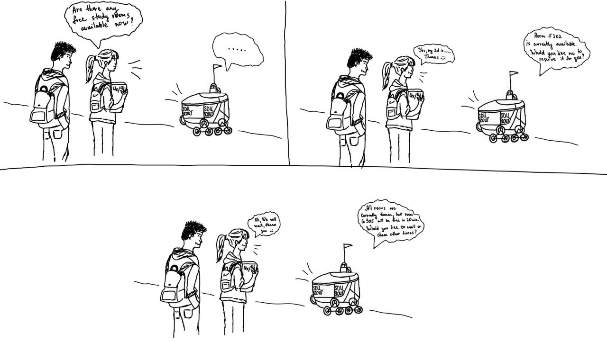

Students often face difficulties when searching for free study rooms, especially during peak times such as exam periods. Physically searching for rooms is inefficient and time-consuming. Automating this process through a robot that provides real-time data will be the optimal solution to this problem.
Our idea is to create a robot that helps students find available study rooms. The primary function of the robot is to provide real-time information on room availability. This solution is designed to simplify student life by giving quick access to essential information and increasing overall efficiency.
The use of a robot also allows for real-time interaction(voice) and adaptability to student requests, making the process of finding study rooms quick, convenient, and intuitive. The system can not only locate available rooms but also suggest alternatives when primary study spaces are occupied.
The storyboard shows the student asking the robot for a free study room, followed by the robot scanning and providing a room suggestion in real-time.
A student concerned about an empty room turns to a robot for help.
The SDU Scout Robot has undergone a change in its functionality. Previously, it offered three functions: finding free study rooms, checking teacher schedules to see if they were on campus, and helping students prepare for midterms or quizzes. However, the updated version now focuses solely on helping students find available study rooms, with the teacher schedule and exam preparation features removed.
The testing procedure will focus on the core feature of the robot, which is room finding. When a student requests to find a study room, the robot should accurately provide real-time availability. For example, if a student requests a room during a peak time, such as lunch, the robot should provide accurate and up-to-date information on available rooms.
The expected outcome is that the robot will quickly identify and suggest an available study room, without errors, and that the interface will be user-friendly, allowing students to easily navigate and check room availability or booking status.